| SOURCE | TITLE| IMAGE MATCH | click to source page |
| HipStamp | Germany 1966 Sc#954 30pf Red Brandenburg Gate Used | Europe - Germany & Colonies - Germany, General Issue Stamp / HipStamp | 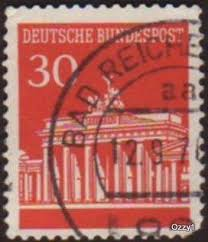 |
| eBay.de | BRD (BR.Deutschland) K9 gestempelt 1968 Brandenburger Tor | eBay.de | 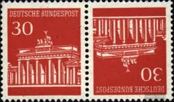 |
| Find Your Stamps Value | BERLIN - Views of Old Berlin: Parochial Church, 1780 70pf Dark gray & lilac stamp price, value | 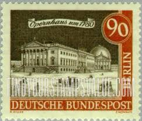 |
| Find Your Stamps Value | BERLIN - Views of Old Berlin: Berlin Palace, 1703 20pf Orange brown & sepia stamp price, value | 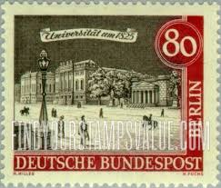 |
| Amazon.com | Amazon.com: FRD (FR.Germany) KZ5 unmounted Mint/Never hinged ** MNH 1967 Brandenburg Tor (Stamps for Collectors) : Toys & Games | 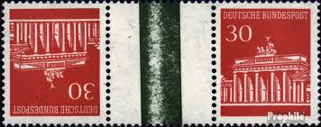 |
| Stamp Auction Network | catalog Level 3 | 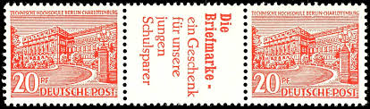 |
| eBay | Germany, Postage Stamp, #1540, 1540A Lot Used, 1987 Historic (AH) | eBay | 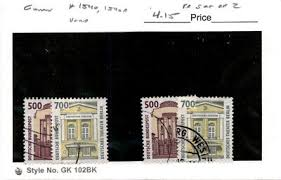 |
| Shutterstock | 3+ Thousand Castle Paper Cut Royalty-Free Images, Stock Photos & Pictures | Shutterstock | 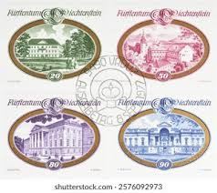 |
| eBay UK | Brandenburg Postage Stamps for sale | eBay UK | 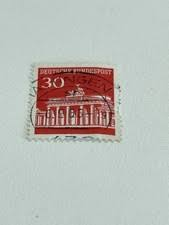 |
| eBay | German Individual 1961-1970 Year of Issue Stamps for sale | eBay | 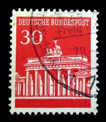 |
| Alamy | Berlin postage stamp hi-res stock photography and images - Page 13 - Alamy | 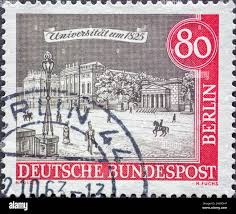 |
| Stamp Community Forum | Collecting By Engraver - Page 52 - Stamp Community Forum | 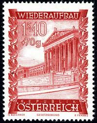 |
| Shutterstock | 20+ Thousand "german_speciality" Royalty-Free Images, Stock Photos & Pictures | Shutterstock | 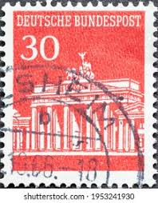 |
| Shutterstock | Germany Circa 1949 Stamp Printed Germany Stock Photo 168636326 | Shutterstock | 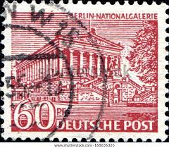 |
| World Stamps Project | Germany, the 1948 Landmarks issue of postage stamps – World Stamps Project | 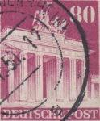 |
| PICRYL | 14 1962 deutsche bundespost berlin stamps Images: PICRYL - Public Domain Media Search Engine Public Domain Search | 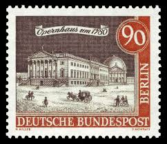 |
| Shutterstock | Ankara Türkiye 06182022 This Postage Stamp Stock Photo 2168820397 | Shutterstock | 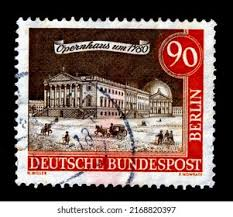 |
| 123RF | INDIA - CIRCA 1972: Stamp Printed By India, Shows Flag Of USSR And Spasski Tower, Circa 1972 Stock Photo, Picture and Royalty Free Image. Image 17464462. |  |
| The Philately | Germany 1980 Mi 1037AI-1038AI Strongholds and Castles Sc 1309-1310 for sale at The Philately | 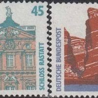 |
| Shutterstock | Revenue Stamp: Over 2,055 Royalty-Free Licensable Stock Photos | Shutterstock |  |
| eBay | GERMANY FEDERAL REPUBLIC BRANDENBURG TOR BOOKLET RARE MICHEL 14d PERFECT MNH | eBay |  |
| Dreamstime.com | GERMANY, Berlin - CIRCA 1949: a Postage Stamp from Germany, Berlin Showing Berlin Buildings: Berlin National Gallery in Red-brown Editorial Photography - Image of national, 1949: 189342817 | 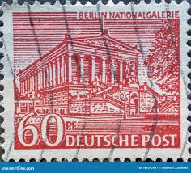 |
| GermanDotMilitaria | od098 - collection of different East German Lotto Lottery tickets - includes Berlin & stamp collector applications - GermanDotMilitaria | 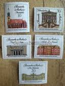 |
| Alamy | DDR - CIRCA 1969: A stamp printed in Germany, shows Vietnamese with weapons, circa 1969 Stock Photo - Alamy | 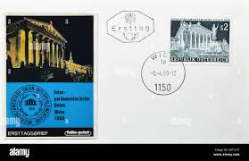 |
| Commonfund | global private equity: what and why | 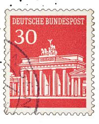 |
| eBay | Stamps France Scott #2499 nh | eBay | 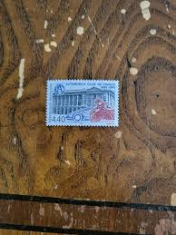 |
| Dreamstime.com | 1000 Piece Bigfoot Jigsaw Puzzle by Archie McPhee on Sale in the Historic Jefferson General Store in Jefferson, Texas. Editorial Image - Image of conference, mcphee: 223011325 | 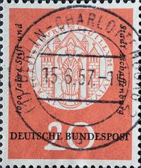 |
| eBay | Joint Issue KZ6 Mint** (AD 626) | eBay | 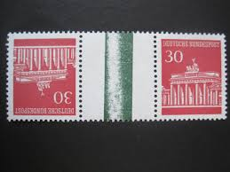 |
| eBay | GERMANY Mi. #MH 14d rare mint MNH stamp booklet (separated)! CV $720.00 | eBay | 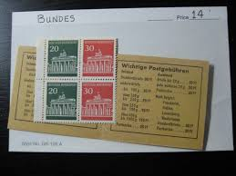 |
| eBay | Geilenkirchen, Reco.-Brief mit Sonder-Reco.-Zettel "8. INT. GROßTAUSCHTAG" 1971 | eBay | 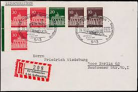 |
| eBay | Österreich Austria 1987 FDC Mi.1891 Gebäude Building Justice Palace [af275] | eBay | 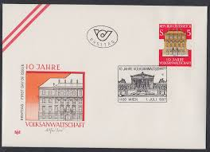 |
| Find Your Stamps Value | BERLIN - Brandenburg Gate Type of Germany 100pf Dark blue stamp price, value |  |
| Alamy | GERMANY - CIRCA 1966: Postage stamp printed in Germany, shown of Brandenburg Gate, Berlin, circa 1966 Stock Photo - Alamy | 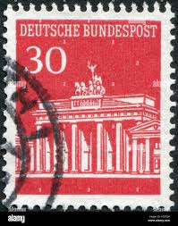 |
| eBay | Germany Berlin 1949 60pf NATIONAL GALLERY USED Sc 9N54 | eBay | 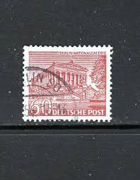 |
| Shutterstock | 3+ Thousand Munich Stamps Royalty-Free Images, Stock Photos & Pictures | Shutterstock | 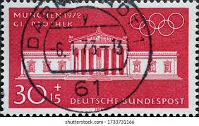 |
| Alamy | Berlin postage stamp vintage hi-res stock photography and images - Alamy | 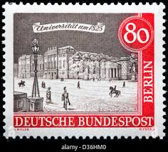 |
| eBay | Liechtenstein Scott 624-627 Mint never hinged. | eBay | 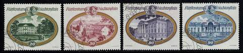 |
| Dreamstime.com | 333 Orders Germany Stock Photos - Free & Royalty-Free Stock Photos from Dreamstime - Page 2 | 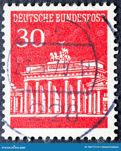 |
| Bid Inside Auctions | Federal Republic of Germany - Auctions - Dr. Reinhard Fischer |  |
| Alamy | LIECHTENSTEIN - CIRCA 1977: a stamp printed in the Liechtenstein shows Liechtenstein Palace, Vienna, circa 1977 Stock Photo - Alamy | 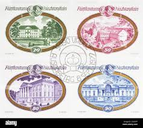 |
| eBay | 50+ stamps for Art or Crafting - Germany #941 depicting The Brandenburg Gate | eBay | 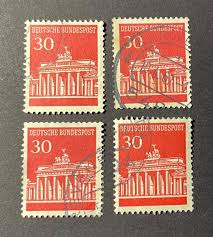 |
| PICRYL | Frimärke ur Gösta Bodmans filatelistiska motivsamling, påbörjad 1950.Frimärke från Tyskland, 1949. Motiv av Nationalgalleriet i Berlin. - PICRYL - Public Domain Media Search Engine Public Domain Search | 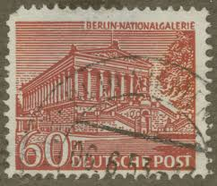 |
| eBay | GERMANY 2463 USED BRANDENBURG GATE - x2 | eBay | 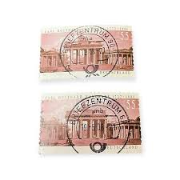 |
| Encyclopaedia Philatelica | The Brandenburg Gate was erected between 1788 and 1791 according to designs by architect Langhans, whose vision was inspired by the propylaea in Athens' Acropolis. The neoclassical sandstone work is the only | 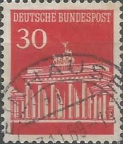 |
| Pngtree | 365 Foto 1970, Gambar Dan Background Untuk Unduh Gratis - Pngtree | 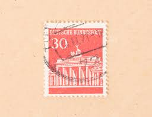 |
| Shutterstock | deutsche_post": Over 5,999 Royalty-Free Licensable Stock Photos | Shutterstock | 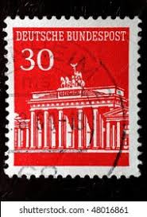 |
| Alamy | GERMANY - CIRCA 1957: This postage stamp shows a postkutzsche with horse and coachman. Text: Joseph von Eichendorff November 26, 1857. 100th anniversa Stock Photo - Alamy | 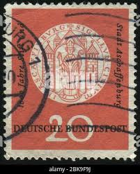 |
| Alamy | German postage stamp brandenburg hi-res stock photography and images - Alamy | 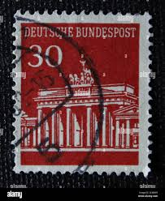 |
| eBay | Original Gum Postage Austrian Stamps for sale | eBay | 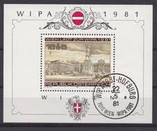 |
| Dreamstime.com | GERMANY, Berlin - CIRCA 1953: a Postage Stamp from Germany, Berlin Showing Men from the History of Berlin: Rudolf Virchow Editorial Image - Image of correspondence, 1953: 189344750 | 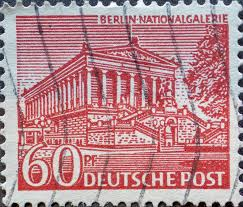 |
| Shutterstock | 18 Austria Since 1230 Royalty-Free Images, Stock Photos & Pictures | Shutterstock | 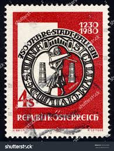 |
| iStock | Germany Stamp Shows Brandenburg Gate Illustration Stock Photo - Download Image Now - iStock |  |
| iStock | German Stamp Brandenburg Gate Stock Photo - Download Image Now - Art, Arts Culture and Entertainment, Berlin - iStock | 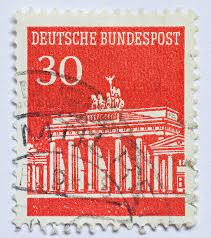 |
| Dreamstime.com | Three German Passports on Orange Background, Close-up Shot. Stock Photo - Image of certificate, citizenship: 354760052 | 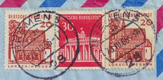 |
| eBay | 3 Very Nice First Day Covers from Austria.....24R........S-212 | eBay | 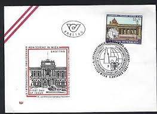 |
| eBay | Austria 1989 Yvert 1800 mini Sheet Criminal law architecture MNH | eBay | 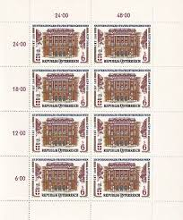 |
| Alamy | The brandenburg gate 1966 hi-res stock photography and images - Alamy | |
| Alamy | GERMANY, Berlin - CIRCA 1963: This postage stamp from Germany, Berlin showing Old Berlin: Hallesches gate around 1880 Stock Photo - Alamy | |
| Shutterstock | Ankara Türkiye 3 September 2021 Germany Stock Photo 2035632848 | Shutterstock |  |
| philatelist.by | 2004 Mi:UA666 (bloc47) Souvenir sheet 170th Anniversary of Kiev University with overprint - Ukrainian stamps |